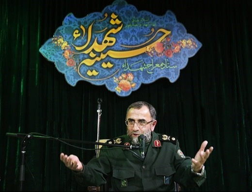
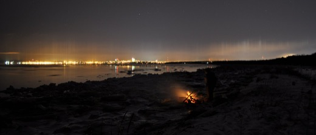
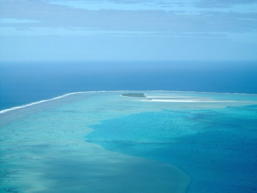
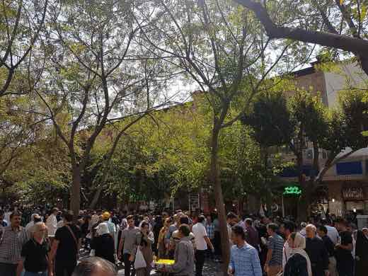
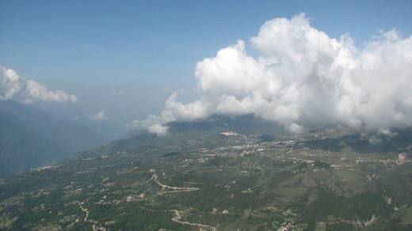
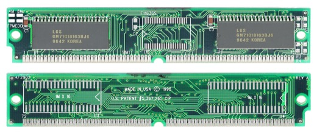

Media de stat
Pagina 2 din 2. Ce spun mediile de stat ale altor țări și ce se probează din ce spun, etichetat corect.
82 articole, cele mai noi întâi.
Iran (Press TV/IRNA): șeful Armatei anunță recompensă de 30.000 de dolari pentru uciderea sau capturarea soldaților americani — dublată dacă e făcută de o femeie
Generalul-maior Amir Hatami, comandantul șef al Armatei iraniene, a anunțat pe 16 august 2026, potrivit presei de stat (Press TV, IRNA), o recompensă de…
Coreea de Sud propune tratat de pace cu Coreea de Nord — presa de stat nord-coreeană (KCNA, Rodong Sinmun) nu a suflat o vorbă, arată presa independentă
📡 Președintele sud-coreean Lee Jae-myung a propus sâmbătă, 15 august 2026, de Ziua Eliberării, negocieri directe cu Coreea de Nord pentru a înlocui…
China spune că exercițiul naval cu Indonezia lângă Taiwan arată „suveranitate” asupra apelor — Taiwan și SUA vorbesc despre presiune militară, Indonezia spune că a fost de rutină
Ministerul chinez al Apărării a anunțat pe 11 august 2026 un exercițiu naval comun cu Indonezia în apele de est ale Taiwanului — prima dată când China…

Un general iranian SUSȚINE că Qatar reține trei piloți iranieni din martie — Qatarul neagă categoric
Presa de stat iraniană (Press TV) relatează pe 15 august 2026 că generalul Mohammad Bagherzadeh SUSȚINE că trei piloți iranieni, doborâți în martie 2026 în…
China (Xinhua) acuză „intenția de a răstălmăci istoria”, după ce miniștri japonezi au vizitat altarul Yasukuni la 81 de ani de la capitularea Japoniei
Pe 15 august 2026, la 81 de ani de la anunțul capitulării Japoniei în Al Doilea Război Mondial, premiera japoneză Sanae Takaichi a trimis o ofrandă rituală…

Un an de la summitul Trump-Putin din Alaska: presa de stat rusă a vândut luni „spiritul Anchorage”, Putin a recunoscut că nu s-a semnat nimic
Azi se împlinește un an de la întâlnirea Trump-Putin de la Anchorage (15 august 2025). Timp de luni, oficialii ruși au SUSȚINUT public că acolo s-a conturat…
China (Xinhua): digul de pe râul Beiru, reparat după ruptura provocată de taifunul Dolphin — „fără victime”, spune presa de stat
Agenția de stat chineză Xinhua relatează că o breșă de peste 40 de metri, produsă miercuri, 12 august 2026, în digul râului Beiru (județul Jiaxian, provincia…

China numește Scarborough Shoal „rezervație naturală”; SUA spune că e un pretext „destabilizant” pentru extinderea controlului maritim
Ce SUSȚINE presa de stat chineză (Global Times, citând Ministerul de Externe): că noua „rezervație naturală națională Huangyan Dao” (Scarborough Shoal) e un…
Coreea de Nord (KCNA) susține că SUA-Japonia-Coreea de Sud formează o „alianță nucleară”. Ce arată sursele independente
Agenția de stat nord-coreeană KCNA a susținut, într-un comentariu din 13 august 2026, că cooperarea militară SUA-Japonia-Coreea de Sud „se transformă într-o…

Presa de stat iraniană: propriul Centru de Cercetare al Parlamentului avertizează că sărăcia ar putea ajunge la 45,5% în 2028
Centrul de Cercetare al Parlamentului iranian — un organism oficial al statului — avertizează, într-un raport citat de ziarul de stat Siasat Rooz pe 27 iulie…

Ofițerul japonez inculpat după ce a intrat cu cuțitul în ambasada Chinei la Tokyo. Ce SUSȚINE presa de stat chineză și ce arată sursele independente
Un sublocotenent al Forțelor de Autoapărare Terestre japoneze a fost inculpat pentru că a pătruns cu un cuțit în ambasada Chinei la Tokyo, pe 24 martie 2026…

Presa de stat turcă anunță un acord SUA-Iran de prelungire a armistițiului. Un oficial iranian spune că nu există nicio discuție
Pe 12-13 august 2026, presa de stat turcă (Anadolu Agency, TRT World) SUSȚINE, citând surse guvernamentale pakistaneze, că SUA și Iran au „convenit” să…

Media de stat chineză numește „exagerare” relatările despre un impas militar cu India lângă Taksing
Ce SUSȚINE presa de stat chineză (Global Times): că relatările despre un impas militar cu India la graniță sunt o „hype” (exagerare) alimentată de o parte a…

Un fost pușcaș marin american, eliberat din Rusia după 4 ani — varianta oficială rusă și cea a familiei diferă complet
Robert Gilman, profesor american din Massachusetts și fost pușcaș marin, a fost eliberat pe 11-12 august 2026 după peste 4 ani de detenție în Rusia. Presa de…
TASS: Putin spune că NATO „se infiltrează” în Asia-Pacific și amenință Rusia. Ce arată sursele independente
La exercițiile Flotei Pacifice ruse, de pe crucișătorul Varyag, lângă Sakhalin, Vladimir Putin a declarat, potrivit agenției de stat TASS, că noi sisteme de…

Iranul anunță șase numiri militare de vârf, după ce comandanții anteriori au fost uciși în atacurile israeliano-americane
Ce SUSȚIN agențiile de stat iraniene IRNA și rusă Sputnik: pe 10 august 2026, liderul suprem Mojtaba Khamenei a emis decrete prin care a numit șase…

O dronă-rachetă explodează la Crocmaz: Moldova acuză războiul Rusiei, Moscova neagă și spune că Chișinăul „urmează orbește” directivele de la Bruxelles
Pe 9 august 2026, o dronă-rachetă a explodat lângă satul Crocmaz, în sudul Moldovei, aproape de granița cu Ucraina. Chișinăul a rechemat ambasadorul din…

China și Coreea de Nord acuză Japonia de „remilitarizare” după primul test cu rachetă Tomahawk. Ce arată sursele independente
Pe 29 iulie 2026, distrugătorul japonez JS Chōkai a lansat pentru prima dată o rachetă de croazieră Tomahawk. Ce SUSȚIN China (prin purtătorul de cuvânt al…
Presa de stat chineză spune că sentința din 2016 privind Marea Chinei de Sud e „hârtie fără valoare”. Ce arată sursele independente
La 10 ani de la hotărârea tribunalului de la Haga, ce SUSȚINE presa de stat chineză (Global Times, media de stat din R.P. Chineză): că sentința din 2016 e…

TASS susține că Rusia a luat ~570 km² în Ucraina în iulie 2026 — analiza independentă ISW arată un avans de până la 15 ori mai mic
Agenția de stat rusă TASS susține, citând un „expert militar”, că forțele ruse au preluat controlul asupra a circa 570-600 km² de teritoriu ucrainean în…
Xinhua numește patrulele gărzii de coastă chineze din estul Taiwanului „aplicare normală a legii”. Taiwan: „aplicare falsă a legii, extindere reală a puterii”
Ce SUSȚINE presa de stat chineză (Xinhua): că patrulele repetate ale Gărzii de Coastă Chineze (CCG) în apele de la est de insula Taiwan sunt „aplicare…

Global Times promovează debutul bursier al CXMT ca „autonomie tehnologică” — chiar sursa de stat recunoaște un decalaj de 2-3 generații față de Samsung, SK Hynix și Micron
Ce SUSȚINE presa de stat chineză (Global Times): că debutul bursier al CXMT — a patra companie din lume capabilă de producție independentă de memorie DRAM…